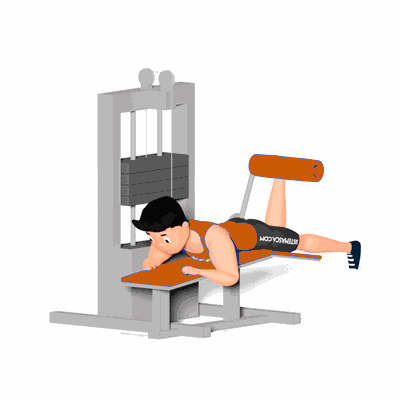

Mesa Flexora Unilateral

Exercício para fortalecimento e hipertrofia da região das coxas, com enfoque nos músculos posteriores de coxa, bíceps femorais. Realiza no aparelho com auxílio de roldanas. Indicado a praticante que deseja realizar um trabalho muscular isolado dos músculos quadríceps e a correção de assimetria.
Ficha Técnica
Tipo: Musculação
Grupo Muscular: Perna
Aparelho: Nenhum
Músculos: Nenhum
Como realizar
- Ajuste o aparelho para altura desejada;
- Deite de bruços no aparelho e manter a coluna reta;
- Encaixe os tornozelos embaixo dos rolos e segure os pegadores para estabilizar o corpo;
- Os joelhos devem ficar para fora do banco, próximos da borda e completamente estendidos. essa é a posição inicial;
- Flexione o joelho de uma perna para levantar o peso o mais alto que conseguir, forçando os músculos posteriores da coxa;
- Segure a contração por um instante e desça o peso controladamente retornando à posição inicial;
- Manter o quadril imóvel no banco durante a execução do exercício.
 RC STORE
RC STORE